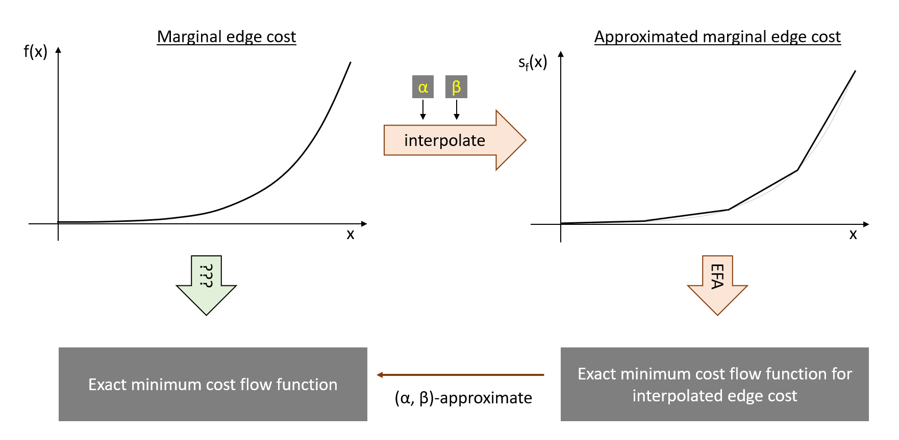

MCA: Marginal Cost Approximation¶
Class Description¶
- class paminco.algo.mca.MCA(network: paminco.net.network.Network, name=None, callback=None, use_simple_timer: bool = True, copy_network: bool = True, **kwargs)[source]¶
Marginal Cost Approximation.
This method interpolates the marginal edge cost and then runs EFA to compute an exact optimal potential (and thus minimum cost flow) function. Thus, MCA is an approximate solver, where the approximation error arises from the spline-interpolation, and is named as marginal cost approximation (MCA).
- Parameters
- netNetwork
Network to find parametric min cost flows for.
- namestr, optional
Name of solver.
- callbackcallable, or list of callable, optional
Callbacks called during initialization and run method. Can be used for debugging and timing.
- use_simple_timerbool, default=True
Whether to time MCA. If
True, timestamps for intializtion and every iteration will be saved to attributetimer.- kwargskeyword arguments, optional
Further options for MCA, see MCFIConfig.
See also
MCAConfigSettings for MCA.
MCAInterpolationRulePiecewise linear interpolation of the edge cost.
paminco.algo.efa.EFAElectrical flow algorithm to be run on modified network with piecewise quadratic cost.
References
- 1
Klimm, Max, and P. Warode. “Parametric Computation of Minimum Cost Flows with Piecewise Quadratic Costs.” Mathematics of Operations Research (2021). Available 10/25/2021 at https://www3.math.tu-berlin.de/disco/research/publications/pdf/KlimmWarode2021.pdf
Examples
Compute the price of anarchy for Sioux Falls:
import numpy as np import copy import paminco net = paminco.net.load_sioux() net.set_demand(("7", "13", 100000)) # ---------------------------------------------------------------- # Calculate system optimum mca_so = MCA(net) mca_so.run() # ---------------------------------------------------------------- # Calculate user equilibrium -> integrate costs net_ue = copy.deepcopy(net) net_ue.integrate_cost() mca_ue = MCA(net_ue) mca_ue.run() # ---------------------------------------------------------------- # Calculate price of anarchy (PoA) x = np.linspace(0, 1, 100) cost_so = np.array([net.cost(mca_so.flow_at(p)).sum() for p in x]) cost_ue = np.array([net.cost(mca_ue.flow_at(p)).sum() for p in x]) PoA = cost_ue / cost_so
Determine edge flow in user equilibrium as a function of demand factor:
import paminco net = paminco.net.load_sioux() net.integrate_cost() net.set_demand(("2", "21", 100000)) mca = MCA(net) mca.run() mca.plot_flow_on_edge(55)
- Attributes
regionndarray of int: piecewise cost region of edges.
edgesObject that keeps track of edge values for current region.
edge_coeffsEdge coefficients for current region.
node_potentialsObject that keeps track of node potentials of current region.
Main Idea¶
Instead of computing a solution to the actual problem - i.e., a parametric mincost flow w.r.t. to the demand factor - the MCA algorithm uses marginal cost \(s_f(x)\) that are a piecewise linear interpolation of the original marginal costs \(f_e(x)\). This problem can then be solved exactly with the EFA algorithm. This main idea is shown in the following image, where we follow the orange arrows to calculate a \((\alpha, \beta)\)-approximate minimum cost flow.
{kind=link}
Settings and Interpolation¶
|
Settings for MCA algorithms. |
|
Breakpoint rule for MCA guaranteeing the \((\alpha, \beta)\)-approximation property. |
Attributes¶
Get network obj. |
|
Get name of object. |
|
Get configuration of solver. |
|
Get current iteration count. |
|
Get current lambda_min. |
|
Get current lambda_max. |
|
Get current breakflag value. |
|
ndarray of int: piecewise cost region of edges. |
|
Object that keeps track of edge values for current region. |
|
Edge coefficients for current region. |
|
Object that keeps track of node potentials of current region. |
|
Get ParametricSolution object. |
|
spmatrix: Laplacian for initial region. |
|
ndarray of int: initial region in piecewise cost funcs. |
Methods¶
|